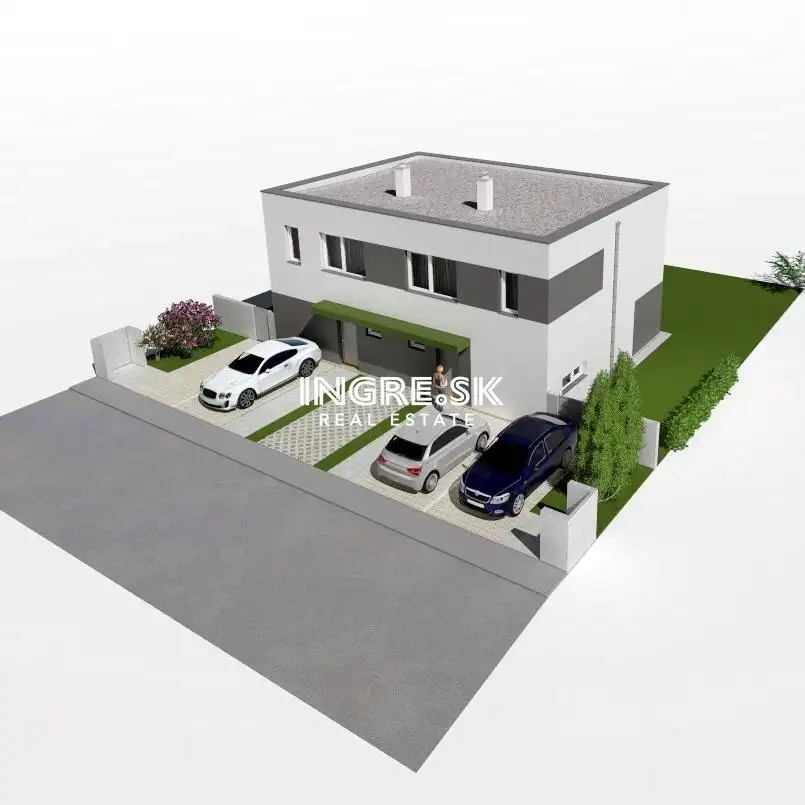
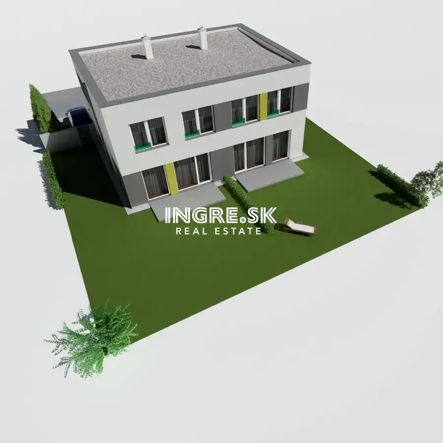
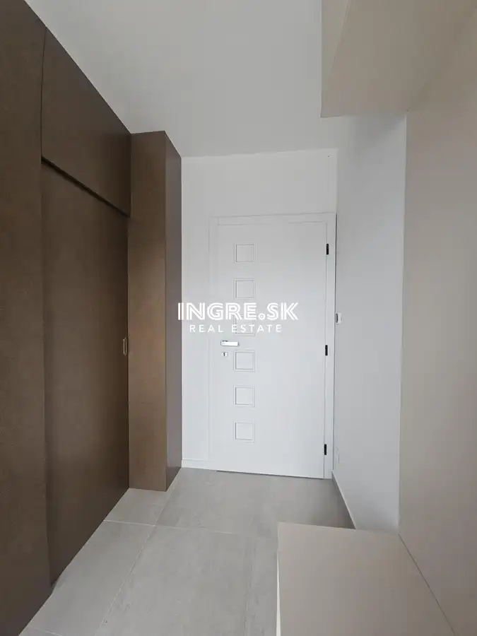
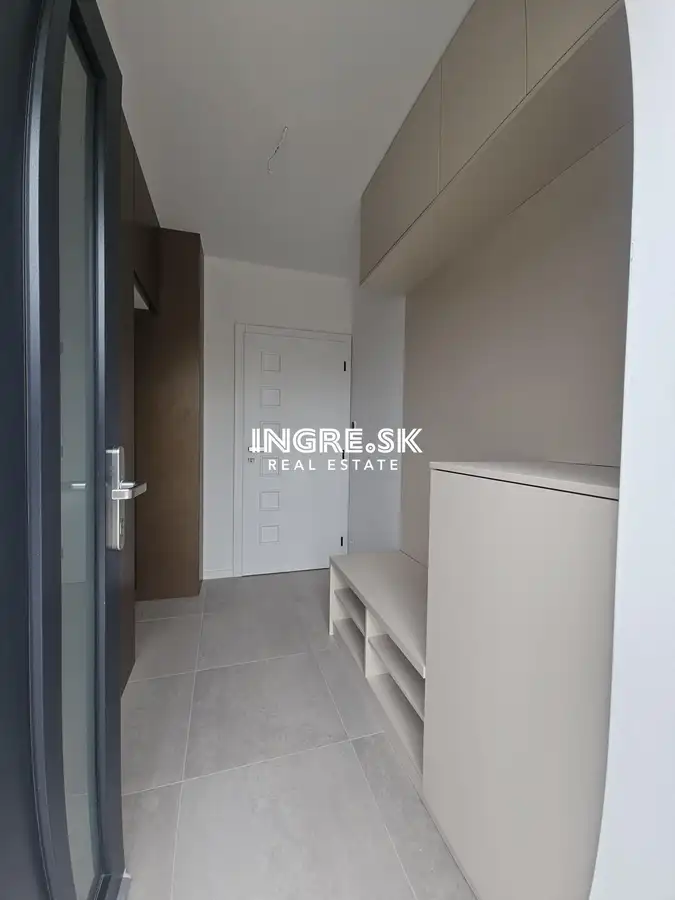
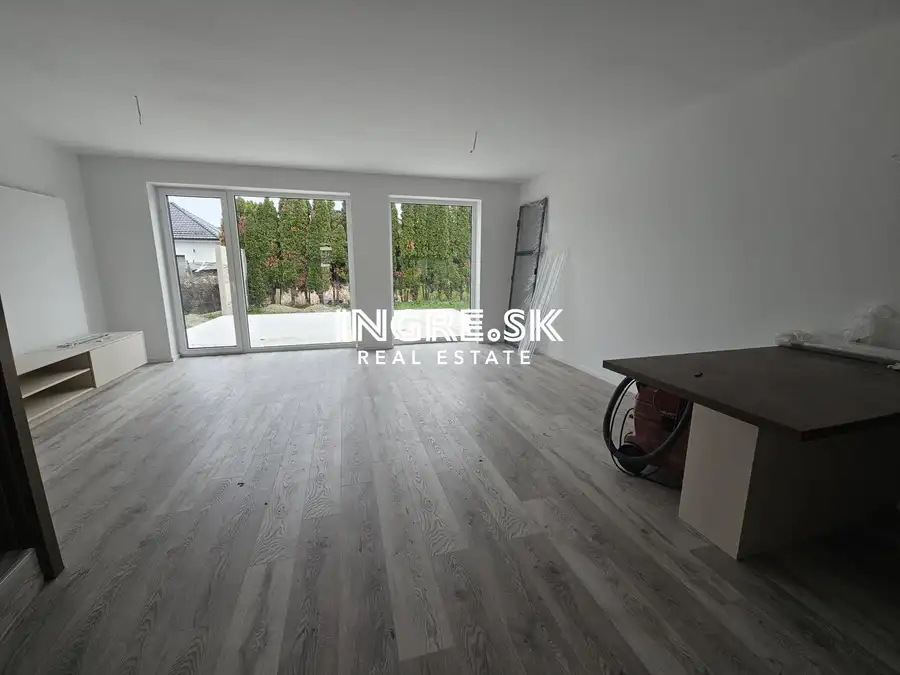
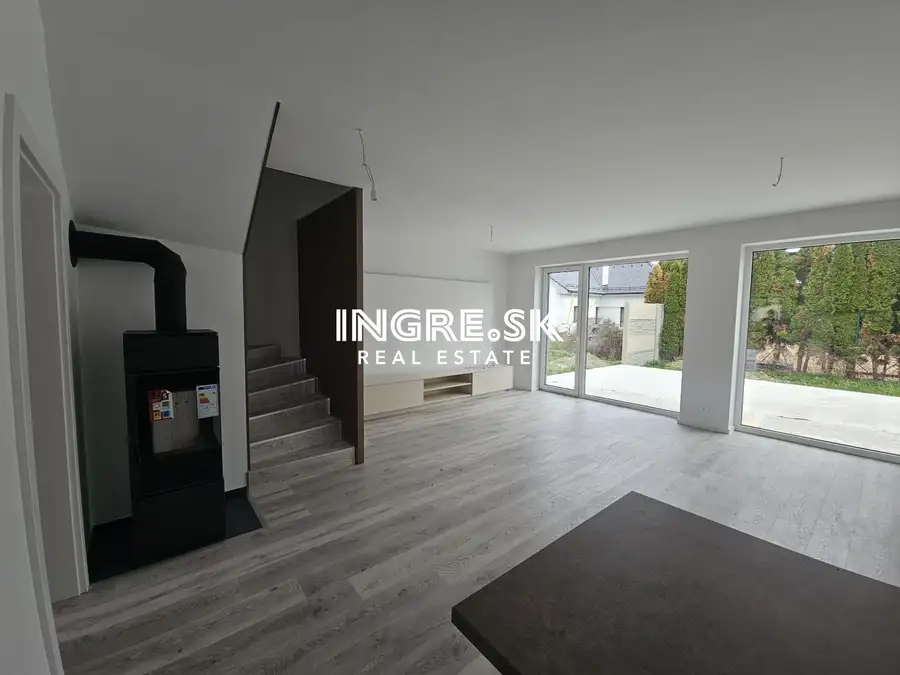
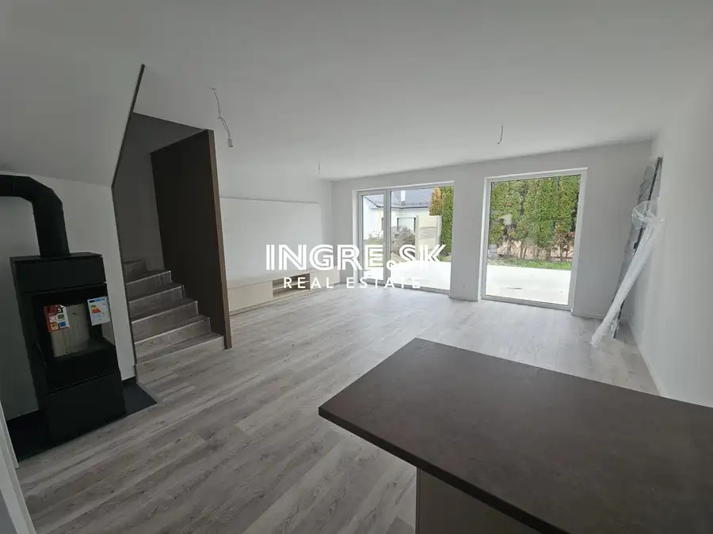
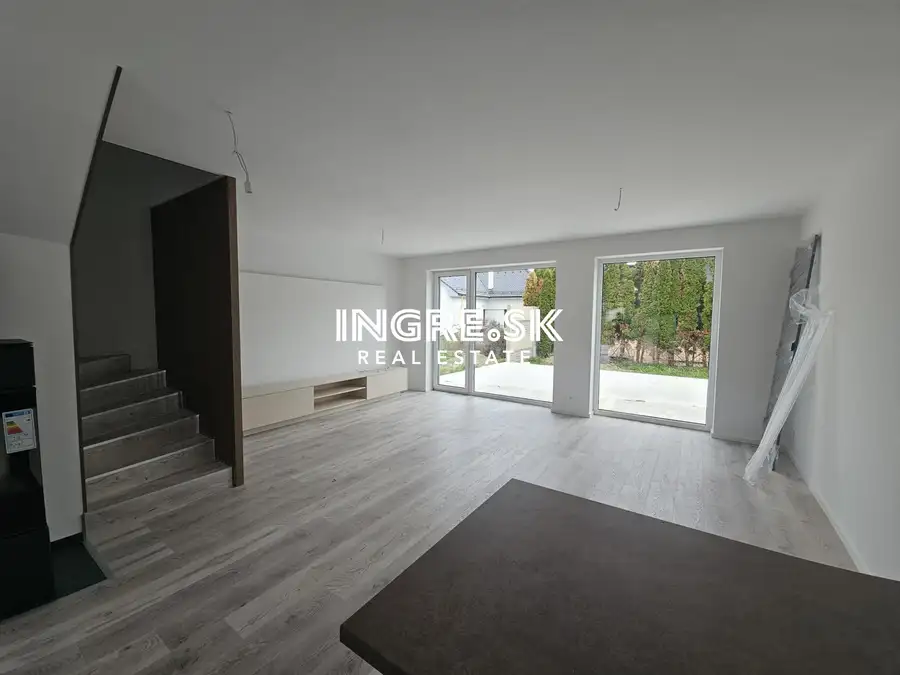
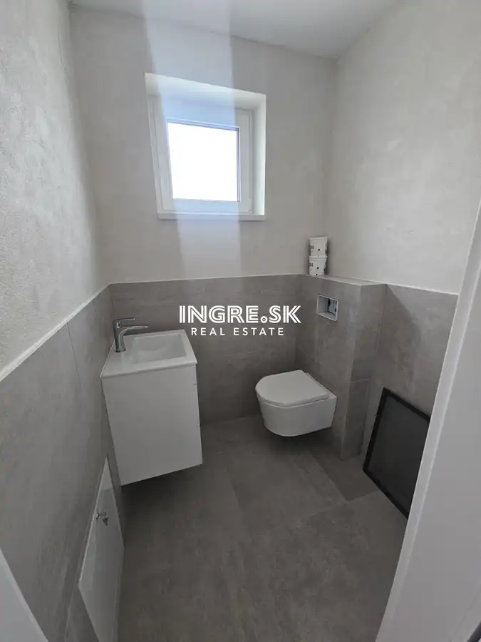
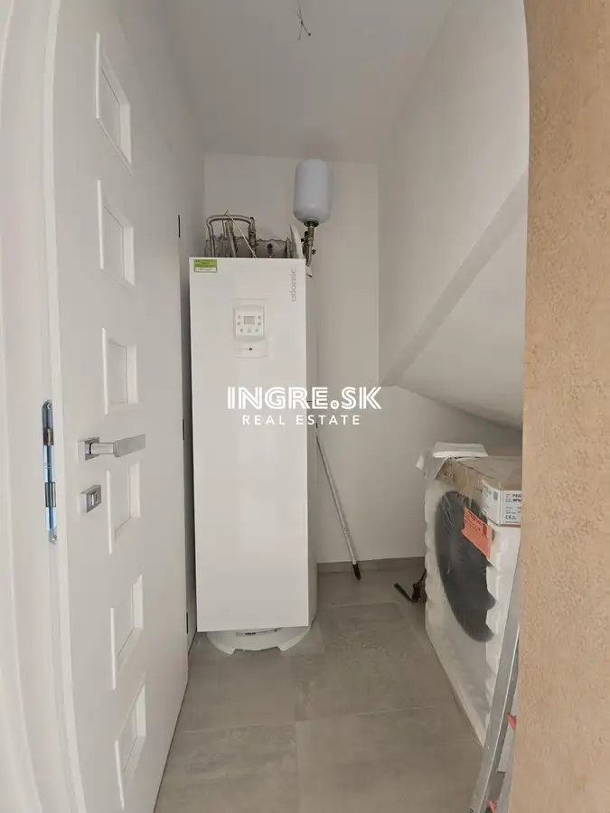

Posledný voľný byt s parkovaním a záhradou Rovinka
Rovinka










- Plocha96 m²
- StavNovostavba
- VlastníctvoOsobné
- Energetická triedaA
O nehnuteľnosti
NOVOSTAVBA – NA PREDAJ 4 IZBOVÉ BYTY S PARKOVANÍM A ZÁHRADOU obec ROVINKA.4 izbové dvojpodlažné byty sú naprojektované v rodinnom dvojdome, každý byt samostatný vstup, 2 x parkovanie, záhrada.Dispozícia :Prízemie : Výmera : 49 m², vstupná hala, WC, kuchynský kút + priestranná obývacia izba so vstupom do záhrady na terasu, sklad resp. úložný priestor, schodisko.Poschodie : Výmera : 47 m², schodisko, chodba, tri samostatné izby, kúpeľňa + WC. Technická dokumentácia :Murovaná stavba – tehla, zateplenie 150 mm, plastové 6 komorové okná trojsklá, sadrové omietky.Strecha : izolácie Isover, + vonkajšia tepelná izolácia na streche + vnútorná izolácia.Kúrenie : Teplovodné - podlahové kúrenie prostredníctvom tepelného čerpadla, predpríprava na fotovoltiku, predpríprava na klimatizáciu, predpríprava na krbovú vložku – komín.Exteriér - terasa, predpríprava na vodu, elektrická zásuvka.Predpokladané nízke prevádzkové náklady na réžiu domu, energetický certifikát A.Stav :Novostavba, kolaudácia 3-4 kvartál 2026, byty dokončené v stave HOLOBYT s možnosťou dokončenia do štandardu v cene cca 18.000,- €Záhrada terénne úpravy, vybudované parkovisko pre dve autá, základne oplotenie medzi byt. jednotkami.Výborná lokalita v Rovinke, Zelená ulica v okolí prevažne zastavaná časť rodinných domov, jedná sa o pôvodnú a tichú začiatočnú časť obce, obec Rovinka disponuje kompletnou občianskou vybavenosťou.Viac info :Cena : 309.900,- €Tel : 0910 310 320Mail : maduda@ingre.sk www.ingre.sk
Parametre
- Druh
- Rodinný dom
- Dátum zverejnenia
- 03. 10. 2026
- Energetická náročnosť
- Energeticky úsporný
- Energetický certifikát budovy
- A
- Orientácia
- Juhozápadná
- Plocha pozemku
- 185 m²
- Plocha predzáhradky
- 185 m²
- Počet izieb / miestností
- 4
- Počet nadzemných podlaží
- 1
- Rok kolaudácie
- 2026
- Rok výstavby
- 2025
- Stav nehnuteľnosti
- Novostavba
- Telekomunikácie
- Internet, Optická sieť
- Terén pozemku
- Rovinatý
- Typ
- Predaj
- Typ konštrukcie
- Tehlová
- Vlastníctvo
- Osobné
- Vybavenie
- Balkón, Pivnica
- Vykurovanie
- Podlahové
- Zariadenie
- Holopriestor
- Zastavaná plocha
- 96 m²
- Úžitková plocha
- 96 m²
Kde to je


Mohlo by Vás zaujímať
 Komerčné priestoryNové
45 000 €Predaj garáž v Ružinove na štrkovci Haburská ulica
Ružinov, Bratislava
13 m²
Komerčné priestoryNové
45 000 €Predaj garáž v Ružinove na štrkovci Haburská ulica
Ružinov, Bratislava
13 m²
 BytNové
95 000 €Na predaj zaujímavý priestor s pozemkom a parkovaním Bratislava Vrakuňa
Vrakuňa, Bratislava
1-izbový25 m²
BytNové
95 000 €Na predaj zaujímavý priestor s pozemkom a parkovaním Bratislava Vrakuňa
Vrakuňa, Bratislava
1-izbový25 m²
 BytNové
309 900 €Novostavba v Rovinke posledný 4 izbový byt s parkovaním a záhradou
Rovinka
4-izbový96 m²
BytNové
309 900 €Novostavba v Rovinke posledný 4 izbový byt s parkovaním a záhradou
Rovinka
4-izbový96 m²